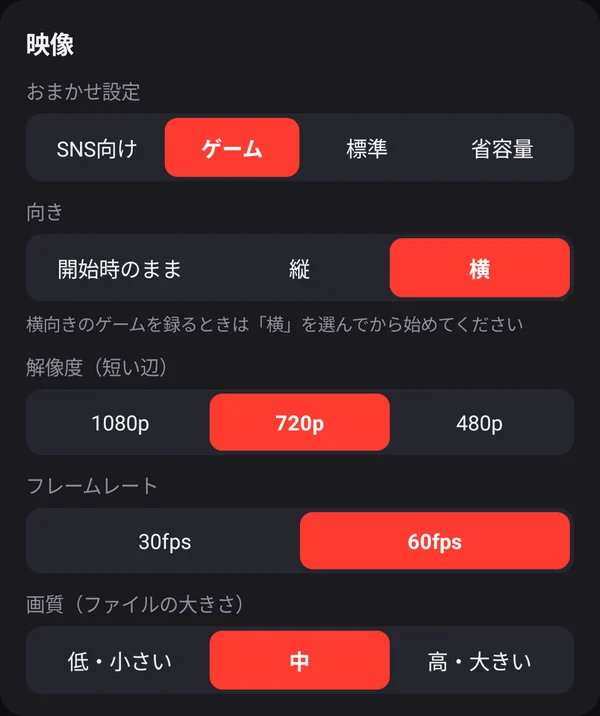
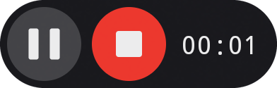
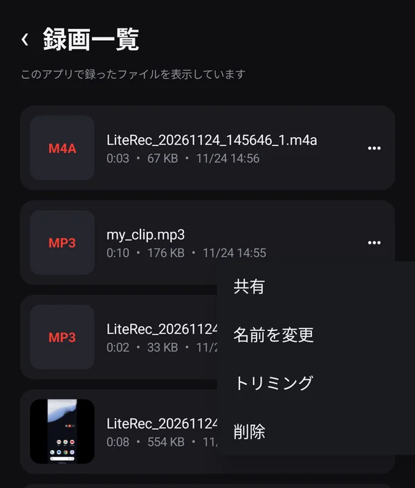
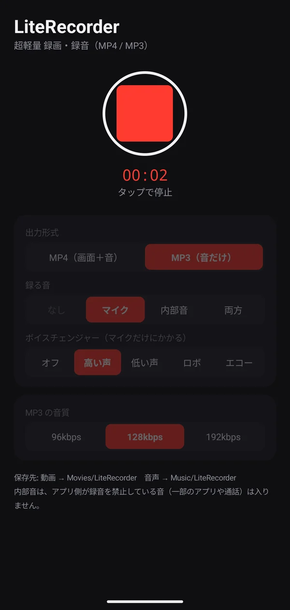

ボイスチェンジャー
声だけ、変える。
エフェクトはマイクにだけかかります。ゲームや動画の音はそのまま、自分の声だけを変えて録れます。
- 高い声半音 1〜12 で高さを調整
- 低い声落ち着いた低めの声に、幅も調整
- ロボ機械っぽい金属的な声に
- エコー広い場所で話しているように
- ラジオ・電話こもった無線や受話器の声に
- 宇宙人少し高くて揺れる不思議な声に
- 試し聴き録る前も、録画中も、イヤホンで自分の声を確認
LiteRecorder 1.3
設定はひと目で分かる切り替えだけ。迷わず録り始められます。
録る音
ゲーム実況はゲームの音と自分の声をいっしょに。音は実際に録れた時刻で映像に合わせるので、音ゲーでもズレにくい。音量・ノイズ除去・音ズレ補正も調整できます。
MP3 / M4A
画面はいらないときは音声だけを保存。M4A なら同じ音質でもっと小さく。96〜192kbps から選べます。
画質
「SNS向け」「ゲーム」「標準」「省容量」を選ぶだけ。横向きのゲームも全面で録れます。もちろん細かく決めることも。

浮かぶボタン
画面のすみに小さなボタン。ドラッグで好きな場所へ。一時停止は通知やクイック設定からも。

録画一覧・編集
トリミング、動画から音だけ取り出し、名前の変更まで。再エンコードしないので一瞬で終わります。

カウントダウン・クイック設定
通知パネルのタイルから1タップで開始。3秒・5秒のカウントダウンで、アプリの画面が写り込みません。
分割保存・自動停止
5・10・30分ごとに別ファイルへ。途中でアプリが終了しても失うのは最後の1ファイルだけ。時間・サイズ・空き容量の上限でも自動で止まります。
ボイスチェンジャー
エフェクトはマイクにだけかかります。ゲームや動画の音はそのまま、自分の声だけを変えて録れます。

オフライン。
LiteRecorder はインターネットの権限を持っていません。使う許可はマイクと通知、浮かぶボタンを使うときだけ「他のアプリの上に表示」。
Android 端末でこのページを開き、APK をダウンロードします。
ファイルを開き、「この提供元のアプリを許可」をオンにしてインストールします。
録る音を選んで、まん中の赤いボタンをタップするだけ。